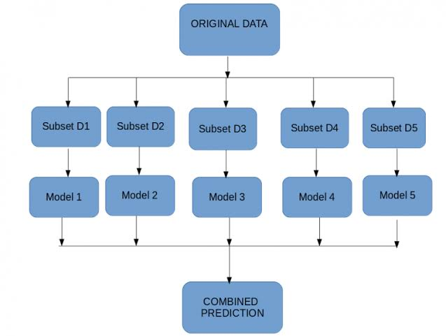

Bagging
About Bagging:
Bagging, also known as bootstrap aggregation, is the ensemble learning method that is commonly used to reduce variance within a noisy dataset. In bagging, a random sample of data in a training set is selected with replacement—meaning that the individual data points can be chosen more than once. After several data samples are generated, these weak models are then trained independently, and depending on the type of task—regression or classification, for example—the average or majority of those predictions yield a more accurate estimate. As a note, the random forest algorithm is considered an extension of the bagging method, using both bagging and feature randomness to create an uncorrelated forest of decision trees.
Applications:
- Healthcare (Bio informatics)
- IT(Software Development)
- Finance(Economics)
- Environment(Forecasting)
Libraries:

Placeholder